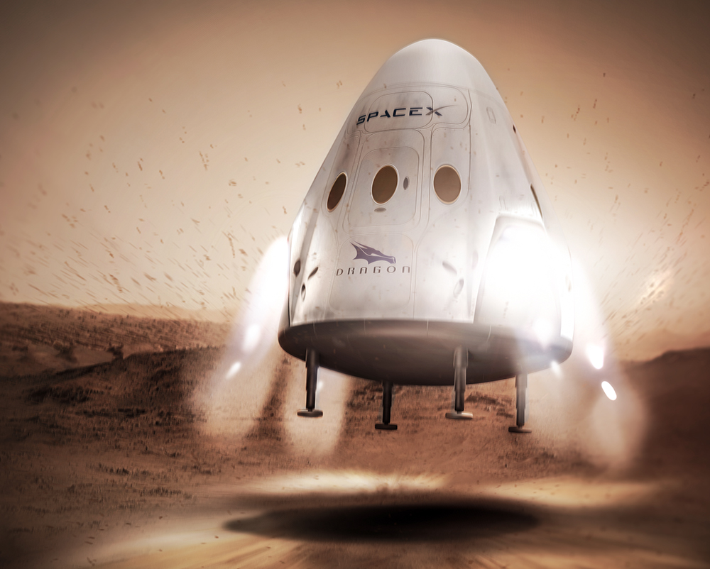

 Dragon is a reusable cargo spacecraft developed by SpaceX, an American private space transportation company. Dragon is launched into orbit by the company's Falcon 9 two-stage-to-orbit launch vehicle.
During its maiden flight in December 2010, Dragon became the first commercially built and operated spacecraft to be recovered successfully from orbit.[2] On 25 May 2012, a cargo variant of Dragon became the first commercial spacecraft to successfully rendezvous with and attach to the International Space Station (ISS). SpaceX is contracted to deliver cargo to the ISS under NASA's Commercial Resupply Services program, and Dragon began regular cargo flights in October 2012. With the Dragon spacecraft and the Orbital ATK Cygnus, NASA seeks to increase its partnerships with domestic commercial aviation and aeronautics industry.
SpaceX has developed a second version called Dragon 2, which includes the capability to transport people. Flight testing is scheduled to complete in the first half of 2019 with the first flight of astronauts, on a mission contracted to NASA, scheduled to occur later the same year.